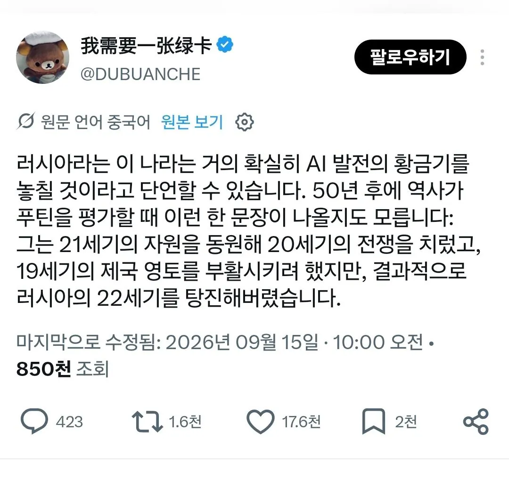
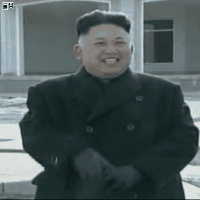

싱글벙글 러시아 현재 상황 요약...JPG
댓글
지피티야 현재 러시아 상황에 맞는 문학 하나 만들어줘
겨울이 물러간 자리에도 모스크바 외곽의 낡은 패널 아파트 단지에는 여전히 차가운 습기가 고여 있었다. 5층 부엌, 낡은 가스레인지 위에서 칠이 벗겨진 주전자가 가느다란 비명을 지르며 끓어올랐다. 안나 세르게예브나는 익숙한 손길로 가스 불을 줄이고, 창틀에 놓인 메마른 제라늄 화분 너머로 낮게 가라앉은 회색빛 하늘을 바라보았다.
거실에서는 온종일 켜져 있는 텔레비전이 웅장한 군악과 함께 조국의 위대함과 흔들림 없는 승리를 단언하는 아나운서의 목소리를 끊임없이 쏟아내고 있었다. 그러나 그 확신에 찬 음성은 방 안의 묵직한 공기를 단 1밀리미터도 밀어내지 못했다. 도시 전체가 거대한 침묵의 유예 속에 갇혀 있었다. 슈퍼마켓 진열대에는 익숙하던 서구 브랜드 대신 낯선 글자의 대체품들이 어색하게 자리를 채웠고, 젊은이들로 붐비던 골목의 세련된 카페들은 간판만 어설프게 바꾼 채 스산한 기운을 풍겼다.
식탁 한구석에는 모서리가 닳은 스마트폰이 엎어져 있었다. 국경 너머 어딘가의 참호로 떠난 아들 미샤의 메신저는 열흘 전 "잘 지내고 있어요, 어머니"라는 짧은 문장에서 멈춰 있었다. 시내 중심가 전광판마다 훈장을 단 군인의 거대한 얼굴과 함께 애국을 호소하는 포스터가 번쩍였지만, 해가 지면 주민들은 숨을 죽인 채 보안 메신저의 암호화된 방을 뒤적이며 다음 징집의 풍문을 확인하느라 바빴다.
사람들은 광장에서 외치지 않았다. 대신 닫힌 주방 문 안쪽에 모여 앉아 홍차를 홀짝이며 감자 가격이나 지난밤의 한파 같은 무해한 일상만을 낮게 읊조렸다. 하지만 서로의 흔들리는 눈동자 속에는 누구나 똑같은 질문을 삼키고 있었다. 우리는 지금 어디로 떠밀려 가고 있는가.
서쪽 국경을 향해 군수 물자를 실은 화물 열차가 덜컹거리며 지나가는 소리가 먼 철길을 타고 아파트 벽면을 희미하게 울렸다. 안나는 차게 식어가는 찻잔을 두 손으로 감싸 쥐었다. 텔레비전 속 번쩍이는 승전의 구호와 식탁 위를 짓누르는 적막 사이에서, 러시아의 봄은 어디에도 닿지 못한 채 얼어붙은 땅 밑에 갇혀 있었다.
잼민이 3.8 입니다
구석진 곳에서 인공지능 로봇이 중국말을 지껄이고, 참다못해 미하일이 구둣발(세달치 월급 300루블을 들여 겨우 장만함)로 걷어차는 장면 나와야 할듯
와 소설 뚝딱이네
ㅅㅂㅋㅋㅋㅋㅋㅋ 개지리네
잼민이가 이정도 라고?
미하일, 미하일, 미하일.
자네만을 믿고 정든 땅을 버리고 바다를 건너 말도 쥐도 풍경도 전혀 다른 곳으로 왔다네
명문이다
러시아 아니랄까봐 생활이 팍팍하고 힘드니까 표현력 폼 올라옴ㅋㅋㅋ
푸틴이 시진핑 부랄 빨 날이 머지않았네ㅋㅋ
이미 빨고 있을듯ㅋㅋㅋㅋㅋㅋ군사력부터 생필품, 기름까지 죄다 중국에몽 도와줘 하고 있는데
푸찡구야 이제 그만 스스로 자립할 때도 되지않았어??
이미 거의 속국 아닌가? ㅋㅋㅋㅋ 중국 없으면 러시아가 독자적으로 할 수 있는게 뭐가 있는지 모르겠음 걍 이젠 충실한 따까리 짓 해야지
좆진핑 아니었으면 더 무서웠을거라는 점에서 그나마 다행이랄지
이미 빨고 있고 중국이 갑질도 낭낭하게 얹어서 주인님 행새 하고 있음 ㅋㅋㅋㅋㅋㅋ
"죽겠다"
러시아가 쪼개져서 주변국에 흡수당할 일은 없나?
물리적 흡수는 당연히 반감이 생길거고 자연스럽게 경제적으로 따서 반쯤 식민지화시키는게 가장 이상적인듯
이미 반쯤 중국한테 따였다고 봐도 무방한데, 문제가 레드팀은 지들끼리도 그걸요제가요왜요를 패시브로 달고 있는 십새끼들이라 늘 하던대로 모라토리움 선언하고 돈 없어 배 째 시전할 수도 있긴함
소련 전철을 밟나
이미 지금 중국 식민지임 ㅌㅋㅋㅋ
ㅇㅈㄹ해서 결국 인류문학1등국가 찍을거같음 ㅋㅋㅋㅋㅋㅋㅋ
전쟁 안했다고 해도 러시아에서 ai기술이 그렇게 발전을 했을라나?
그 기회마저 박탈당함
불과 50년전만 해도 과학기술 강국이였는데
제대로된 지도자만 있었음 모를일이지
할수도 있음
미국처럼 공교육이 심각하게 무너지지도 않았고
인구도 1억넘어가며
it로는 아직도 괜찮은 곳이 많으니
그래도 냉전 시대에 미국이랑 어깨를 나란히 할 뻔 했던 나라이고 나름 과학 강국이었는데 뭐라도 했겠지..
중국이 여러 개가 되게 해 줘! -> 중국+러시아+미국
단순히 22세기일까.. 요즘 발전 속도를 보면 ㄷㄷ
러시아의 21세기는 끝난게 맞다
러시아군 무슨 군집드론? 개발하고 있다더만 남의 AI 갖다 쓰는가보네
120% 중국ai 실사용실험대상임 ㅋㅋㅋㅋ
러시아는 딱히 전쟁안했어도 유의미한 나라는 아니었기 때문에
러시아 60년 전까지만 강대국이었지
지금은 그냥 땅만큰 애매한 국가지
씹창난 러시아의 경제는 유구한 역사

그거 아니더라도 애초에 전자기기도 개판인데 ai까디 가능했을까?
러시아는 데센 만들기 진짜 최적의 지형같은데
기온상승 알빠노 하고 북극쪽 해안에 화력발전소 + 데이터센터 지어서 자체쿨링하고
그렇게 나온 열로 해안쪽 빙하 녹으면 그 길을 북극항로로 써서 통행료만 거둬도 앉아서 돈 버는 거였네
러시아가 개발쪽으로 꽤 잠재력 있던나란데 전쟁나면서 다 조진듯
중국만 싱글벙글 하는거지
러시아 개발한다면서... 중국회사가 가서, 중국인들을 채용하고, 중국인들이 운영하는 식당에다가, 중국인들이 운영하는 호텔을 짓고, 개발한 자원 이익 대부분은 중국으로 보내고.... 아... 물론 개발 완료되면 식당과 호텔은 러시아에 비싸게 팔아 넘기고 엑싯할겁니다.
개발하던인재들도 긁어서 전쟁보냈을려나 그럼 ㅈㅈ
It쪽 역량도 괜찮았고 석유판 돈에 많은 인구, 넓은땅 등 조건은 괜찮았었는데
근데 애초에 ai는 소수의 나라만 생존하는거 아니였어? 전쟁 안했어도 못했을수도 있을듯?
문학은 건졌죠?